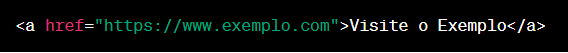
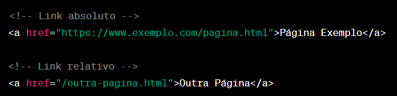
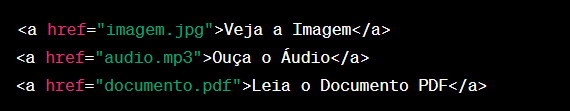
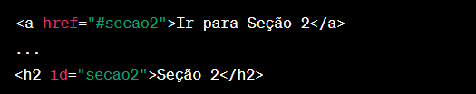
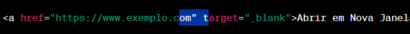

Links
Breve descrição sobre Links
Os links são elementos fundamentais para a navegação entre páginas e recursos na web.
O elemento principal para criar links é < a > (âncora), e os links são geralmente usados para direcionar o usuário para outras páginas, recursos ou locais na mesma página.
Aqui estão alguns conceitos importantes sobre links em HTML:
Elemento
< a > (Âncora)
O elemento < a > é usado para criar links.
A sintaxe básica inclui o atributo href, que especifica o URL de destino para o link.

Este link direcionará o usuário para "https://www.exemplo.com" quando clicado.
Outro exemplo de link, que vai levar o usuário para a página do Google.
Links Relativos e Absolutos
O valor do atributo href pode ser um URL absoluto (completo) ou um caminho relativo ao arquivo ou recurso dentro do mesmo site.
Links relativos são frequentemente usados para referenciar recursos no mesmo site.

Exemplo de link absoluto, que vai levar o usuário para a página do Google.
Exemplo de link relativo, dentro desse mesmo site.
Links para Outros Recursos
Além de direcionar para páginas web, os links podem ser usados para vincular a diferentes tipos de recursos, como imagens, arquivos de áudio, arquivos PDF, etc.
Exemplo:

Links Internos (Âncoras)
Você pode criar links internos usando âncoras (< a >) com o atributo href apontando para IDs de elementos na mesma página.

Isso cria um link que leva o usuário diretamente para a Seção 2 na mesma página quando clicado.
Exemplo de link âncora, para acessar um id dentro da página.
Alvos (target)
O atributo target é usado para especificar como o link deve ser aberto.
Os valores comuns incluem _blank (abrir em uma nova janela ou guia) e
_self (abrir na mesma janela ou guia).

Isso abre uma nova janela.
Exemplo de links:
Usando o atributo "target" com o valor _blank
abrir em uma nova janela ou guia
Usando o atributo "target" _self
abrir na mesma janela ou guia
abrir em uma nova janela ou guia
Usando o atributo "target" _self
abrir na mesma janela ou guia